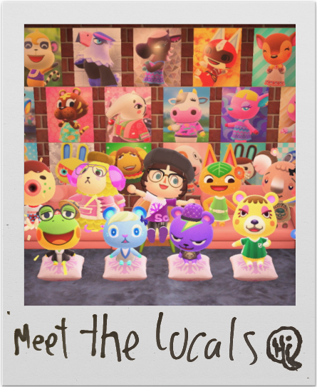

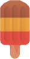
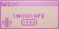
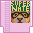
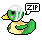
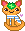
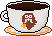
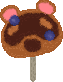
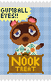
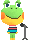
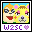
Hey! I'm Jørgen(aka Icyhuman), and this is my website, Welcome To Snowcape. The site started as an interactive map I made to show off my Animal Crossing island to my friends, and eventually grew into whatever this is.
I'm a mildly autistic late twentysomething with a tech degree, who fell a few years behind in life due to depression and ended up graduating after AI turned the job market into super hell. With job hunting being borderline impossible, I needed to use my coding skills for something, and ended up gravitating towards web development.
A lot of people my age write about how they grew up on the old internet and miss it. I don't know, I explored the internet until I found flash games, and then I didn't really need to explore anymore because Fancy Pants Adventure was awesome:)
There should be another meaningful paragraph here where I make some sort of point, but I'm kinda stuck on how to make whatever point I was gonna make. I think I was gonna talk about other stuff I like, but I accidentally themed my entire site around one of my interests. Whatever. I've been playing Rune Factory 4 Special on my switch. Very good, would recommend. Also listen to Long Season by Fishmans.
Anyways, sorry for rambling, I am prone to doing that. Please enjoy the site!